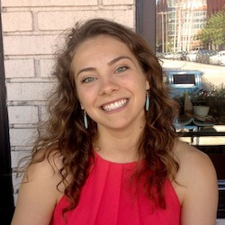
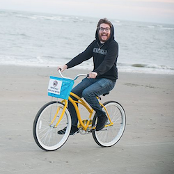
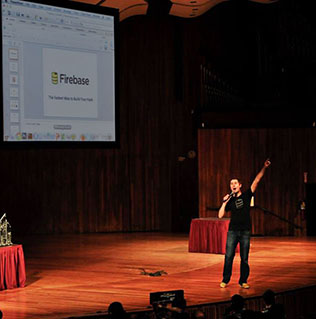

I'm Marcella, the CEO
I'm finishing up my degree in Government and Computer Science at Skidmore College. I'm a designer/front-end developer by trade, political philosophy fanatic, and life enthusiast. I enjoy poking holes in society and finding solutions to them via technology. "Forgiveness > Permission." In addition to technology and philosophy, I enjoy doing handstands and talking to you about anything. Contact me at 607.206.2399 or marcella@opencampusjobs.com.
Let me introduce you to my team
Meet Ryan, the CFO
Ryan is the CFO of Open Campus and the most wholesome aspiring wall street financeer I've ever met. Down to earth, but also down to work. He is a self-proclaimed "fitness enthusaist," co-Prez of the UAlbany iBanking club, and has an impressive watch collection. Ryan has been with Open Campus since the beginning and will continue to go forth and conquer as he enters his Senior year. If you didn't think financial spreadsheets could be works of art, you haven't seen Ryan's.
Meet Lyssa, my right hand woman
Lyssa is a little beast, in the best way possible. Co-Founder and President of Skidmore's Women in Business, professional networker, and force of nature. She carries a bag containing every single life essential- something more of us should do. I can't count the number of conversations we've had en route to conferences or meetings where I feel myself getting smarter just talking with her. She writes, plans, executes, ideates, and challenges me. Most importantly, she has my back.
Meet Bridget, a UX Engineer
Bridget was the first female engineer from RPI to sign up on Open Campus. She built the first ever user experience flow of Open Campus which influenced the flow you see today. She now continues to do website audits and optimize the user experience of Open Campus. Bridgets turn around rate is remarkable. Her dedication to research and then practical application of knowledge deems her an impressive Student Professional in the UX design world. She frequently posts UX research on her Twitter.

Meet Max, a developer
Max moonlights for Open Campus as a developer. He's responsible for implementing any and all technology tools with Open Campus to make your experience more fruitful. Max can talk for days about the trade-offs of any technology. He also works on a project of his own Empire Windrush creating data visualizations for the digital humanities. When this guy sleeps, I don't know.

Open Campus is powered by Firebase
Founded by James Tamplin and Andrew Lee, Firebase is a tool built to make the real-time technology accessible to developers, so that they can build their own powerful applications. It incorporates years of learning about how to handle real-time data on the web and solves many of the hard problems so that developers don’t have to solve them again. Open Campus integrates Firebase to not only host all of our data, but additionally allow you to see your profiles and job posts updated in real time. We know that finding talent or finding a job is one of your priorities, so why not create an experience that gives you the feedback you want and deserve. Thanks to Firebase, we can give you that.